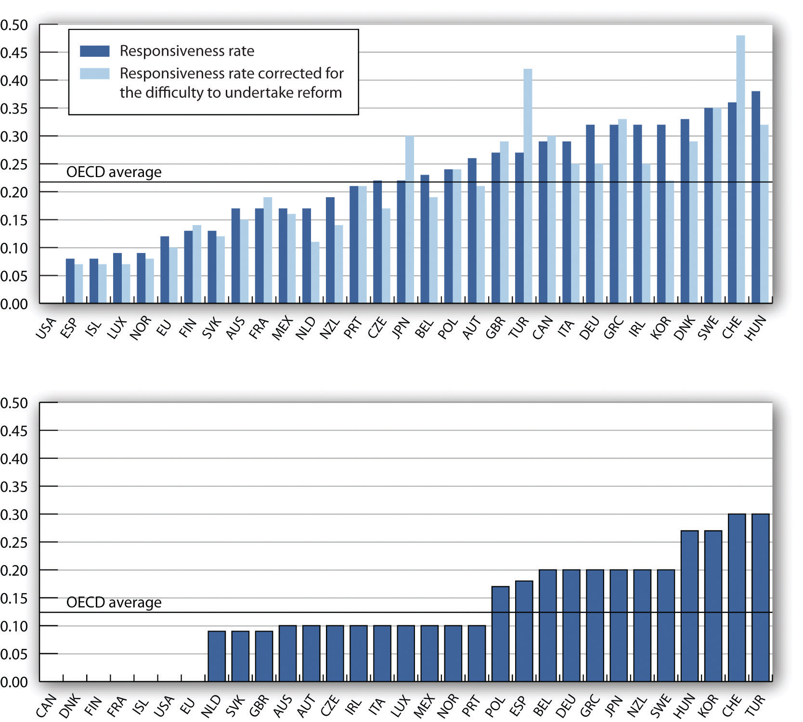

In this section, we review the main determinants of economic growth. We also examine the reasons for the widening disparities in economic growth rates among countries in recent years.
As we have learned, there are two ways to model economic growth: (1) as an outward shift in an economy’s production possibilities curve, and (2) as a shift to the right in its long-run aggregate supply curve. In drawing either one at a point in time, we assume that the economy’s factors of production and its technology are unchanged. Changing these will shift both curves. Therefore, anything that increases the quantity or quality of factors of production or that improves the technology available to the economy contributes to economic growth.
The sources of growth for the U.S. economy in the 20th century were presented in the chapter on choices in production. There we learned that the main sources of growth for the United States from 1960 to 2007 were divided between increases in the quantities of labor and of physical capital (about 65%) and in improvements in the qualities of the factors of production and technology (about 35%). Since 2000, however, the contributions from improvements in factor quality and technology have accounted for about half the economic growth in the United States.
In order to devote resources to increasing physical and human capital and to improving technology—activities that will enhance future production—society must forgo using them now to produce consumer goods. Even though the people in the economy would enjoy a higher standard of living today without this sacrifice, they are willing to reduce present consumption in order to have more goods and services available for the future.
As a college student, you personally made such a choice. You decided to devote time to study that you could have spent earning income. With the higher income, you could enjoy greater consumption today. You made this choice because you expect to earn higher income in the future and thus to enjoy greater consumption in the future. Because many other people in the society also choose to acquire more education, society allocates resources to produce education. The education produced today will enhance the society’s human capital and thus its economic growth.
All other things equal, higher saving allows more resources to be devoted to increases in physical and human capital and technological improvement. In other words, saving, which is income not spent on consumption, promotes economic growth by making available resources that can be channeled into growth-enhancing uses.
Toward the end of the 20th century, it appeared that some of the world’s more affluent countries were growing robustly while others were growing more slowly or even stagnating. This observation was confirmed in a major study by the Organisation for Economic Co-operation and Development (OECD),The material in this section is based on Organisation for Economic Co-operation and Development, The Sources of Economic Growth in OECD Countries, 2003. whose members are listed in Table 23.1 "Growing Disparities in Rates of Economic Growth". The table shows that for the OECD countries as a whole, economic growth per capita fell from an average of 2.2% per year in the 1980s to an average of 1.9% per year in the 1990s. The higher standard deviation in the latter period confirms an increased disparity of growth rates in the more recent period. Moreover, the data on individual countries show that per capita growth in some countries (specifically, the United States, Canada, Ireland, Netherlands, Norway, and Spain) picked up, especially in the latter half of the 1990s, while it decelerated in most of the countries of continental Europe and Japan.
Table 23.1 Growing Disparities in Rates of Economic Growth
| Trend Growth of GDP per Capita | |||
|---|---|---|---|
| Country | 1980–1990 | 1990–2000 | 1996–2000 |
| United States | 2.1 | 2.3 | 2.8 |
| Japan | 3.3 | 1.4 | 0.9 |
| Germany | 1.9 | 1.2 | 1.7 |
| France | 1.6 | 1.5 | 1.9 |
| Italy | 2.3 | 1.5 | 1.7 |
| United Kingdom | 2.2 | 2.1 | 2.3 |
| Canada | 1.4 | 1.7 | 2.6 |
| Austria | 2.1 | 1.9 | 2.3 |
| Belgium | 2.0 | 1.9 | 2.3 |
| Denmark | 1.9 | 1.9 | 2.3 |
| Finland | 2.2 | 2.1 | 3.9 |
| Greece | 0.5 | 1.8 | 2.7 |
| Iceland | 1.7 | 1.5 | 2.6 |
| Ireland | 3.0 | 6.4 | 7.9 |
| Luxembourg | 4.0 | 4.5 | 4.6 |
| Netherlands | 1.6 | 2.4 | 2.7 |
| Portugal | 3.1 | 2.8 | 2.7 |
| Spain | 2.3 | 2.7 | 3.2 |
| Sweden | 1.7 | 1.5 | 2.6 |
| Switzerland | 1.4 | 0.4 | 1.1 |
| Turkey | 2.1 | 2.1 | 1.9 |
| Australia | 1.6 | 2.4 | 2.8 |
| New Zealand | 1.4 | 1.2 | 1.8 |
| Mexico | 0.0 | 1.6 | 2.7 |
| Korea | 7.2 | 5.1 | 4.2 |
| Hungary | — | 2.3 | 3.5 |
| Poland | — | 4.2 | 4.8 |
| Czech Republic | — | 1.7 | 1.4 |
| OECD24* | 2.2 | 1.9 | 2.2 |
| Standard Deviation of OECD24 | 0.74 | 1.17 | 1.37 |
| *Excludes Czech Republic, Hungary, Korea, Mexico, Poland, and Slovak Republic | |||
Variation in the growth in real GDP per capita has widened among the world’s leading industrialized economies.
Source: Excerpted from Table 1.1 Organisation for Economic Co-operation and Development, Sources of Economic Growth in OECD Countries, 2003: p. 32–33.
The study goes on to try to explain the reasons for the divergent growth trends. The main findings were:
The general concern in the second half of the 1970s and the 1980s was that economic growth was slowing down and that it might not be possible to reverse this pattern. The 1990s and early 2000s, in which growth picked up in some countries but not in others, suggested that the problem was not universal and led to a search for the reasons for the disparities in growth rates that emerged. The OECD study described above gives some possible explanations. The findings of that study practically beg countries to examine closely their economic policies at a variety of levels and to consider changes that may add flexibility to their economies.
To spur this process, in 2005, the OECD started a new annual publication called Going for Growth. The inaugural edition identified five priority structural policy areas specific to each OECD country. The policies were categorized as either improving labor utilization or improving productivity. Suggestions for improved labor utilization ranged from changing tax policies to improving incentives for females to enter, and for older people to remain in, the workforce. Suggestions for improved productivity ranged from education reform to privatization of state-owned industries. As an example, the priorities proposed for the United States in 2005 included (1) limiting increases in labor costs by reforming Medicare to restrain health care costs, (2) encouraging private saving by shifting the burden of taxation toward consumption, (3) improving primary and secondary education, (4) reducing trade-distorting agricultural price supports, and (5) promoting transparency and accountability of corporate governance.Organisation for Economic Co-operation and Development, Economic Policy Reforms: Going for Growth 2005, available at http://www.OECD.org/economics/goingforgrowth.
The 2010 edition of Going for GrowthOrganisation for Economic Co-operation and Development, Economic Policy Reforms: Going for Growth 2010, available at http://www.OECD.org/economics/goingforgrowth. took stock of the progress made over the five-year period leading up to 2010. While two-thirds of the OECD countries took some legislative action in at least one priority area, the scope and depth of this progress varied immensely across countries.
Figure 23.9 " of " summarizes this progress using two alternative measures. Panel (a) shows a responsiveness rate, which measures significant actions taken, and Panel (b) shows a follow-through rate, which measures whether priorities could be dropped due to reform implementation.
As we can see, the responsiveness and follow-through rates vary widely. Turkey and the Czech Republic stand out as the countries having undertaken substantial reform. The United States stands out as the country having shown neither responsiveness nor follow-through. While the relatively strong performance of the United States at the end of the 20th century, as shown in Table 23.1 "Growing Disparities in Rates of Economic Growth", could indicate relatively less need for growth-enhancing reforms, the comparative lack of progress since 2005 raises doubt concerning the ability to maintain strong economic growth going forward.
Figure 23.9 of Going for Growth Recommendations across Countries since 2005
Panel (a) measures the 2005 to 2009 rate of responsiveness to the reform priorities given to each country in 2005. Panel (b) shows the reform follow-through rates. Growth-enhancing policy reforms across countries varied widely during this period.
Source: Organisation for Economic Co-operation and Development, Going for Growth 2010, Figure 2.6, p. 75.
In closing, it is worth reiterating that economic freedom and higher incomes tend to go together. Countries could not have attained high levels of income if they had not maintained the economic freedom that contributed to high incomes in the first place. Thus, it is also likely that rates of economic growth in the future will be related to the amount of economic freedom countries choose. We shall see in later chapters that monetary and fiscal policies that are used to stabilize the economy in the short run can also have an impact on long-run economic growth.
All other things unchanged, compare the position of a country’s expected production possibility curve and the expected position of its long-run aggregate supply curve if:

Economist William Easterly in his aptly named book The Elusive Quest for Growth: Economists’ Adventures and Misadventures in the Tropics admits that after 50 years of searching for the magic formula for turning poor countries into rich ones, the quest remains elusive.
Poor countries just need more physical capital, you say? Easterly points out that between 1960 and 1985, the capital stock per worker in both Gambia and Japan rose by over 500%. The result? In Gambia, output per worker over the 25-year period rose 2%; in Japan, output per worker rose 260%.
So, it must be that poor countries need more human capital? Again, he finds startling comparisons. For example, human capital expanded faster in Zambia than in Korea, but Zambia’s annual growth rate is 7 percentage points below Korea’s.
Too much population growth? Too little? More foreign aid? Too much? As Easterly proceeds, writing a prescription for growth seems ever more difficult: “None has delivered as promised,” he concludes (p. xi).
While Easterly does not offer his own new panacea for how to move countries to a higher level of per capita GDP, where the model presented in this chapter does seem to provide some explanations of why a country’s growth rate may vary over time or differ from another country’s, he does argue that creating incentives for growth in poor countries is crucial. Acknowledging a role for plain luck, Easterly argues that good government policies—ones that keep low such negatives as inflation, corruption, and red tape—and quality institutions and laws—ones that, for example, honor contracts and reward merit—will help.
How to actually improve such incentives might constitute the next great quest:
“We have learned once and for all that there are no magical elixirs to bring a happy ending to our quest for growth. Prosperity happens when all the players in the development game have the right incentives. It happens when government incentives induce technological adaptation, high-quality investment in machines, and high-quality schooling. It happens when donors face incentives that induce them to give aid to countries with good policies where aid will have high payoffs, not to countries with poor policies where aid is wasted. It happens when the poor get good opportunities and incentives, which requires government welfare programs that reward rather than penalize earning income. It happens when politics is not polarized between antagonistic interest groups. . . . The solutions are a lot more difficult to describe than the problems. The way forward must be to create incentives for growth for the trinity of governments, donors, and individuals.” (p. 289–90)
Source: William Easterly, The Elusive Quest for Growth: Economists’ Adventures and Misadventures in the Tropics (Cambridge: MIT Press, 2002).
Situations 1 and 4 should lead to a shift further outward in the country’s production possibility curve and further to the right in its long-run aggregate supply curve. Situations 2 and 3 should lead to smaller outward shifts in the country’s production possibility curve and smaller rightward shifts in its long-run aggregate supply curve.